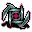

刃のタリスマン Blade talisman
英語版 CrawlWiki の記事「Blade talisman」(0.34 向け、2026-09-20 版)の翻訳です。原文の著者は編集履歴をご覧ください。
| ぎざぎざの刃が寄り集まったもので、怪我をせずに握るのはほとんど不可能だ。着用者の体から長く針のように細い刃を生やし、素早い補助の近接攻撃を繰り出したり、攻撃を受け流したりすることさえできるようにする。体の中にこれほど多くの金属片があると胴鎧の効果が下がるが、変身術のスキルはこの影響を和らげるとともに、与えるダメージも増やす。 |


基本情報
刃のタリスマンをPキーで身につけると刃の手に変身し、自分で変身を解くまで続く。変身には4ターン、解除には5ターンかかる。
刃の手の効果は次のとおり。
戦闘面の強化
- 徒手格闘: 基本ダメージ3(強化なし)
- 刃の補助攻撃: 補助攻撃が2つ増える。近接攻撃をするたびに、それぞれが独立に 60% の確率で攻撃する。基本ダメージはスキル17で10、スキル25で16。
- 受け流し: 近接攻撃をしたターンに一時的な SH を得る。変身術のスキルに応じて増え、スキル17で SH 6、スキル25で SH 12。殺戮の値でも増える。
- 胴鎧の基本 AC が下がる。胴鎧の AC に -50% から -20% の補正がかかる。
制限
- 融合する装備: ほかの多くの変身と違い、刃の手に変身した状態では装備が体に融合することも、変異が抑えられることもない。
必要な変身術スキルは17で、これを下回るとHP が減るうえに、防具の AC がさらに下がり、刃の補助攻撃のダメージも落ちる。スキルの上限は25で、それより上げても効果は変わらない。
戦略
刃の手は殺戮のボーナスとの相性が非常によい。殺戮の値は2つの補助攻撃の両方に乗るうえ、受け流しで得る SH も同じだけ増える。そのため、斃れし者の遁走曲やウー・ジアン評議会の天の嵐で得られる殺戮ボーナスが、攻めにも守りにも効いてくる。
真っ先に思い浮かぶ神はウー・ジアンだが、攻撃速度を上げるものなら何でもこの形態の火力を伸ばせる。オカワルも自然な選択肢だし、トログのバーサークでも十分役に立つ。
この形態は、胴鎧の AC を気にしないキャラクターに特に向いている。器用を主体にしたキャラクターやフェリッド、殺戮の値が大きい(そのぶん SH が増える)キャラクターなら、失った AC を実質的に埋め合わせるか、無視できる。相乗効果をすべて考えればゲームクリアまで通用する形態で、それまで大口や鰻の手を使っていたキャラクターが自然に乗り換える先でもある。
変更履歴
- 0.34 より前の刃の手は、必要スキル12の形態だった。手を長い針に変えて素手のダメージを大きく上げ(急所攻撃もできた)、その代わりに武器と副手のスロットが融合し、爪の変異も抑えられていた。
- 0.33 より前は、変身術のスキルが低いときの AC の減少が、最初は基本 AC の 100% だった。
- 0.31 の変身の見直しで導入された。それ以前は刃の手という呪文だった。この呪文は基本ダメージが22で、ヒドラの首を切り落とせ、呪文の詠唱にペナルティがあり、AC のペナルティはなかった(ただし呪文なので、重い防具を着ていると唱えにくかった)。
出典
| 変身 | |
|---|---|
| タリスマン | 第1段階: 針化 • 巻物 第2段階: スカラベ • 胞子 • ヤク • メデューサ 第3段階: 大口 • 鰻の手 • 蟹 • 人狼 • 大蛇 • 蜘蛛 • 水化 第4段階: 刃の手 • 竜化 • 石像 • 巣 • スフィンクス • 吸血鬼(コウモリ群) 第5段階: 嵐化 • 死霊化 |
| ボーブル | 流転 |
| 不利な変身 | コウモリ • 茸化 • 豚化 • 樹化 • 霧化 • ジェリー |
| 神の力 | 殺戮 |